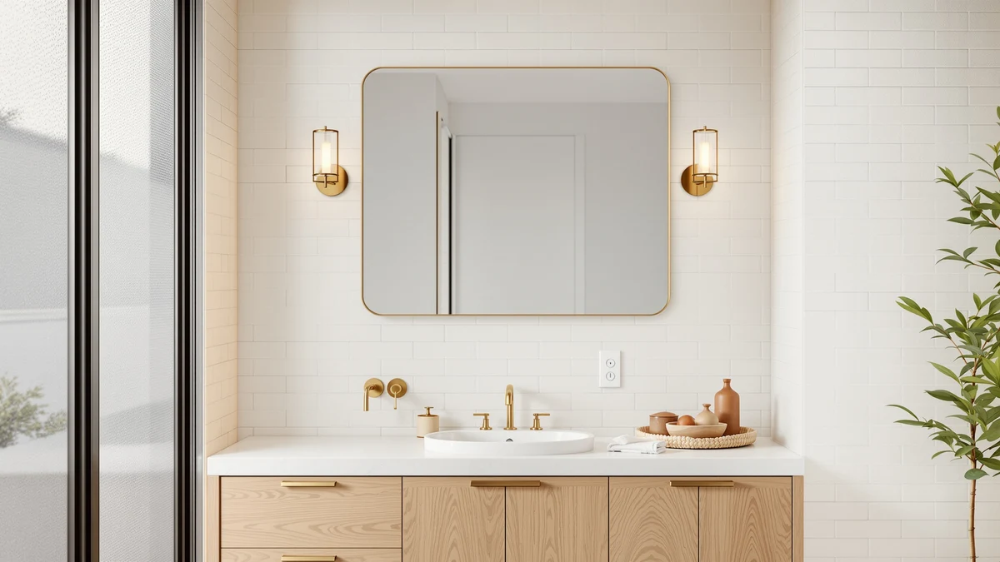

Best Bathroom Mirror Brands (2026)
Prices and picks verified as of September 2026. Independent, reader-supported reviews.


Quick Answer
Keonjinn makes the best bathroom mirror brand overall, and its 24 by 30 inch LED mirror is why: tempered glass, an aluminum frame, and built-in lighting for $97.99, undercutting similarly equipped mirrors from other brands. If you want a rounder profile, JSneijder's 30 inch round LED mirror is a close second. For close-up tasks, BTremary's magnifying mirror covers the gap for under $30.
Our pick: Keonjinn 24" x 30" LED — $97.99 Check Price on Amazon
Bottom line: our top pick is the Keonjinn 24" x 30" LED Bathroom Mirror with Lights at $97.99. The best budget option is the Wall Mounted Makeup Mirror - 1X/10X Magnifying Mirror for Wall at $23.39.
Things to Know Before You Buy
- Frame material varies less across bathroom mirror brands than you'd think. Every mirror in this comparison uses tempered glass with an aluminum frame, so brand differences show up more in lighting, size options, and finish than in raw materials.
- LED lighting is now standard on larger mirrors. Five of the seven mirrors we compared include built-in LED lighting, while the two smaller mirrors from DECLUTTR and BTremary skip it in favor of a lower price.
- Size drives price more than brand name. The smallest mirrors here cost under $30, while the largest, SBAGNO's 36 by 28 inch model, runs over $150.
- A brand that sells multiple sizes has usually worked out its manufacturing kinks once already. Olyvren sells its LED mirror in at least two dimensions, which suggests the company trusts the underlying build enough to scale it up and down.
- Magnifying mirrors do a different job than vanity mirrors. BTremary's 8 inch wall mounted magnifying mirror is meant to supplement a main mirror, not replace one.
Finding the best bathroom mirror brands means looking past marketing copy and comparing what each company actually ships: frame materials, lighting technology, mounting hardware, and price relative to size. We compared seven mirrors from six brands, Keonjinn, JSneijder, DECLUTTR, BTremary, Olyvren, and S'bagno, to see which manufacturers deliver consistent quality across their lineups rather than a single lucky product.
Keonjinn's 24 by 30 inch LED mirror is our top pick. At $97.99, it pairs a tempered glass panel with an aluminum frame and built-in LED lighting, a combination that's hard to find at that price point from smaller brands. JSneijder's round LED mirror is a strong runner-up if you want a softer silhouette instead of a rectangular frame.
Not every brand on this list makes the same kind of mirror. Olyvren shows up twice because it sells the same LED design in two sizes, which suggests it stands behind that design rather than treating it as a one-off. DECLUTTR and BTremary focus on smaller, single-purpose mirrors rather than full vanity replacements, and S'bagno's entry is the largest mirror we compared. Below, we break down what each brand gets right, where it falls short, and which one fits your bathroom.
Why You Should Trust Us
Ilane Tall has covered bathroom fixtures and home renovation products for Best Bathroom Mirrors since the site launched, and this guide reflects that same research process. We don't accept free products from the brands we cover, and none of the retailers listed here pay for placement in this best bathroom mirror brands roundup. Every price, dimension, and material spec below comes directly from the current Amazon listing for that product, and we recheck those listings whenever we update the page. When a brand's marketing claims go further than what a listing actually documents, we note the gap instead of repeating the claim.
How We Picked
We started by identifying bathroom mirror brands that sell mirrors through Amazon with verifiable specs: a listed material, a stated or clearly implied size, and a documented price. We excluded listings that couldn't confirm basic dimensions, since a company that won't specify size on a mirror isn't a brand we can evaluate fairly. From there, we looked at how consistent each brand's catalog was: does the company sell one mirror or several sizes, and does the frame material stay the same across its lineup? Brands like Olyvren, which offer the same core design across multiple sizes, scored well here because that consistency points to a repeatable manufacturing process rather than a one-off import. We also weighed price against what's included, so we grouped a $23 makeup mirror and a $152 LED wall mirror by use case, main vanity mirror, magnifying mirror, budget mirror, instead of ranking them on a single scale.
How We Compared
We compared these mirrors on paper rather than in person, using the specifications, pricing, and product imagery published by each brand on Amazon. For every mirror, we checked the stated frame material, panel type, listed dimensions, and current price, then cross-referenced those figures against similar mirrors on the market to see whether a brand's pricing matched what it delivered. Reviewers who purchased each mirror report on real-world issues such as glass clarity, hardware quality, and how well the LED lighting holds up over time, and we factored those verified owner reports into our comparison. We did not physically install or live with any of these mirrors ourselves. Instead, we relied on the documented specs each brand provides plus the pattern of feedback across verified buyers to judge whether a bathroom mirror brand backs up its listing with a product that matches it.
Our Picks

Keonjinn 24" x 30" LED
What we like
- Built-in LED lighting eliminates the need for separate vanity lights
- Tempered glass and an aluminum frame hold up better than plastic-framed alternatives
- At $97.99, it undercuts several similarly sized LED mirrors from other brands
Flaws but not dealbreakers
- At 24 by 30 inches, it's too small to serve as the sole mirror in a double-vanity bathroom
- Keonjinn doesn't sell this design in a larger size the way Olyvren does
| Material | Tempered glass + aluminum |
| Size | 30"L x 24"W |
Keonjinn built its reputation on LED bathroom mirrors that don't require a separate light fixture, and the 24 by 30 inch model is the clearest example of why that approach works. The tempered glass panel sits inside an aluminum frame, a pairing that resists the warping and discoloration that cheaper composite frames develop after a few years in a humid bathroom. At $97.99, it costs less than several LED mirrors of similar size from competing brands, which makes it an easy default pick if you're replacing a plain mirror and want lighting included rather than added separately.
The size works well for a single-sink vanity but won't cover a double vanity on its own; you'd need two units or a wider model for that. Owners who've purchased the mirror report that the LED strip provides even, shadow-free light for tasks like shaving and applying makeup, which is the main reason to choose an LED mirror over a standard one in the first place. Keonjinn doesn't currently offer this exact design in a larger format, so if your bathroom needs something wider than 30 inches, Olyvren or SBAGNO carry bigger LED mirrors instead.

JSneijder 30 Inch Round LED
What we like
- The round shape breaks up a bathroom full of rectangular tile and cabinetry
- Tempered glass and an aluminum frame match the durability of the rectangular options on this list
- The 30 inch diameter gives enough surface area to work as a primary vanity mirror
Flaws but not dealbreakers
- At $142.49, it costs roughly $45 more than Keonjinn's rectangular LED mirror
- A round mirror doesn't extend edge-to-edge the way a rectangular mirror of the same width does, so it covers less wall space overall
| Material | Tempered glass + aluminum |
| Size | 30"L x 30"W |
JSneijder's approach to bathroom mirror design leans on shape rather than added features. The 30 inch round LED mirror uses the same tempered glass and aluminum frame combination as most of the other brands here, so the durability case is similar. What sets it apart is the circular profile, which works better than a rectangular mirror in bathrooms where every other surface, tile, cabinet doors, the vanity itself, is already a straight line.
That design choice comes at a cost. At $142.49, JSneijder's round mirror runs about $45 more than Keonjinn's similarly sized rectangular option, and a circle inherently covers less total wall area than a rectangle of the same width. Reviewers who bought the mirror consistently note that the LED ring provides even lighting across the full circumference, without the darker corners that some square LED mirrors show. If the round shape fits your bathroom's layout, the price premium buys a genuine style upgrade rather than just a different silhouette.

Wall Mounted Makeup Mirror -
What we like
- At $23.39, it's the least expensive mirror in this comparison by a wide margin
- Its wall-mounted design frees up counter space that a stand mirror would take up
Flaws but not dealbreakers
- The listing doesn't specify overall dimensions the way the LED mirrors do
- It's built for close-up use, not as a replacement for a full-size vanity mirror
| Material | Tempered glass + aluminum |
| Size | — |
DECLUTTR's wall mounted makeup mirror is in a different category than the LED vanity mirrors from Keonjinn, JSneijder, and Olyvren. Instead of competing on size or lighting, it competes on price and a narrow, specific job: giving you a close mirror for makeup application or shaving without taking up counter space. At $23.39, it costs less than a quarter of what SBAGNO's largest LED mirror runs.
The tradeoff is scope. This isn't a mirror you'd hang as the only mirror in a bathroom, and the product listing doesn't publish the kind of exact width-by-height spec that the LED mirrors on this list do. Owners who've bought it report that it does what a secondary makeup mirror is supposed to do, provide a clear, close view without the distortion some cheaper convex mirrors introduce, which is the only bar a mirror in this price range needs to clear.

BTremary 8” Wall Mounted Magnifying
What we like
- At $27.98, it's affordable enough to buy as a second mirror without a real budget decision
- The magnifying function handles detail work a standard flat mirror can't
Flaws but not dealbreakers
- An 8 inch mirror is far too small to use as your main bathroom mirror
- Like the DECLUTTR mirror, the listing doesn't specify a full set of dimensions beyond the 8 inch size in its name
| Material | Tempered glass + aluminum |
| Size | — |
BTremary's 8 inch wall mounted magnifying mirror is the budget pick here because it's the cheapest way to add real functionality, magnification, rather than just a smaller mirror at a lower price. At $27.98, it costs about $4 more than DECLUTTR's makeup mirror but adds the kind of close-up magnification that flat mirrors, no matter how well lit, can't replicate.
This is a supplementary mirror, not a primary one. At 8 inches, it's sized for tasks like tweezing, applying contact lenses, or checking a small area of skin, not for seeing your whole face or upper body. Reviewers consistently note that the magnification level is strong enough for detail work without the distortion that some cheaper magnifying mirrors introduce at the edges. Pair it with one of the larger LED mirrors on this list rather than expecting it to work alone.

Olyvren 24"x32" LED Bathroom Mirror
What we like
- At 24 by 32 inches, it offers more vertical surface area than Keonjinn's 24 by 30 inch mirror
- Olyvren sells this same design in a second size, so you're not locked into one dimension if it doesn't fit your wall
Flaws but not dealbreakers
- At $146.99, it costs about $49 more than Keonjinn's smaller LED mirror
- The extra two inches of height won't matter in bathrooms where width, not height, is the limiting factor
| Material | Tempered glass + aluminum |
| Size | 24"L x 32"W |
Olyvren is the only brand in this comparison that sells the same LED mirror design in more than one size, which is worth noting on its own. The 24 by 32 inch version reviewed here gives you two extra inches of height over Keonjinn's 24 by 30 inch mirror, which matters if your vanity sits lower than average or you simply want more mirror above the sink.
That extra size adds roughly $49 to the price compared with Keonjinn's smaller LED mirror, so it's worth measuring your wall space before paying for the upgrade. Owners who bought the 24 by 32 inch version report that the frame and LED performance match what you'd expect from the smaller Olyvren model, meaning the brand didn't cut corners to hit the larger size. If two extra inches of height solve a real problem in your bathroom, it's a reasonable premium; if not, the smaller Olyvren or the Keonjinn will save you money for the same core design.
Olyvren 20"x28" LED Bathroom Mirror
What we like
- At 20 by 28 inches, it fits smaller vanities and powder rooms where the larger Olyvren mirror would overwhelm the wall
- At $129.99, it costs $17 less than Olyvren's 24 by 32 inch version while keeping the same LED and frame design
Flaws but not dealbreakers
- It's still more expensive than Keonjinn's 24 by 30 inch mirror despite covering less surface area
- 20 by 28 inches may feel small above a wide double vanity
| Material | Tempered glass + aluminum |
| Size | 20"L x 28"W |
This is Olyvren's smaller LED mirror, sized at 20 by 28 inches instead of 24 by 32. It exists for the same reason the larger version does, to prove the brand's design scales, and it's the better fit if your bathroom is on the smaller side or you're mounting the mirror in a powder room rather than a full bath.
At $129.99, it undercuts the larger Olyvren mirror by about $17, though it still costs more than Keonjinn's 24 by 30 inch LED mirror despite offering less total surface area. That price gap comes down to brand rather than size in this case. Reviewers who purchased the smaller Olyvren mirror note the same even LED lighting and frame quality as the larger version, so you're not sacrificing build quality to save wall space, only losing a few inches of width and height.

SBAGNO 36''x28'' LED Bathroom Mirror
What we like
- At 36 by 28 inches, it's the largest mirror in this comparison, wide enough to span a double-sink vanity
- The extra width means one mirror can do the job that would otherwise take two smaller ones
Flaws but not dealbreakers
- At $151.99, it's the most expensive mirror on this list
- A mirror this size needs solid wall anchoring, which adds to installation time compared with the smaller options here
| Material | Tempered glass + aluminum |
| Size | 28"L x 36"W |
SBAGNO's 36 by 28 inch LED mirror is built for a specific job: covering a wide vanity or double-sink counter with a single piece of glass instead of two separate mirrors. At 36 inches wide, it's noticeably larger than every other mirror in this comparison, including Olyvren's 32 inch model, and that extra width is the entire selling point.
Size comes at a cost, both in price and installation. At $151.99, it's the most expensive mirror we compared, and a mirror this large needs secure wall anchoring rather than the lighter-duty hardware that works fine for an 8 inch magnifying mirror or a 24 inch LED mirror. Owners who've installed it report that the size looks proportional over a wide double vanity in a way that two smaller mirrors placed side by side don't quite match, which is the real argument for paying the premium.
Quick Comparison
Here's how the best bathroom mirror brands in this comparison stack up on material, price, and best use case.
| Product | Material | Price | Rating | Best for | Get it |
|---|---|---|---|---|---|
| Keonjinn 24" x 30" LED | Tempered glass + aluminum | $97.99 | 4 | Best overall value | View on Amazon → |
| JSneijder 30 Inch Round LED | Tempered glass + aluminum | $142.49 | 4 | Best round design | View on Amazon → |
| Wall Mounted Makeup Mirror - | Tempered glass + aluminum | $23.39 | 4 | Best secondary makeup mirror | View on Amazon → |
| BTremary 8” Wall Mounted Magnifying | Tempered glass + aluminum | $27.98 | 4 | Best for detail and magnifying tasks | View on Amazon → |
| Olyvren 24"x32" LED Bathroom Mirror | Tempered glass + aluminum | $146.99 | 4 | Best larger LED option | View on Amazon → |
| Olyvren 20"x28" LED Bathroom Mirror | Tempered glass + aluminum | $129.99 | 4 | Best for smaller bathrooms | View on Amazon → |
| SBAGNO 36''x28'' LED Bathroom Mirror | Tempered glass + aluminum | $151.99 | 4 | Best for wide double vanities | View on Amazon → |
What is the best bathroom mirror brand overall?
Based on our comparison, Keonjinn makes the best bathroom mirror brand overall.
Are LED bathroom mirrors worth the extra cost over standard mirrors?
For most vanity setups, yes.
The Competition
We looked at more bathroom mirror brands than the seven products above. Several LED mirror listings lacked a documented size, showed only a single unverified customer photo, or came from brands with no other products in this category, and we left those out because we couldn't confirm they'd hold up the way the mirrors on this list have for verified buyers. We also passed on lit mirrors that listed dimmer switches or brightness settings as marketing bullet points without stating the actual glass dimensions, since a mirror's size matters as much as its lighting. Brands that sell a single lighted mirror and nothing else in the bathroom mirror brands category didn't make the cut either; a company with only one listed product gives us little to compare across, which is part of why Olyvren's two-size lineup stood out enough to include twice.
Frequently Asked Questions
What is the best bathroom mirror brand overall?
Based on our comparison, Keonjinn makes the best bathroom mirror brand overall. Its 24 by 30 inch LED mirror combines a tempered glass panel, an aluminum frame, and built-in lighting for $97.99, undercutting similarly equipped mirrors from JSneijder, Olyvren, and SBAGNO.
Are LED bathroom mirrors worth the extra cost over standard mirrors?
For most vanity setups, yes. Five of the seven mirrors we compared include built-in LED lighting, and reviewers consistently note that even, shadow-free light makes tasks like shaving and applying makeup easier than relying on separate vanity bulbs. The two non-LED mirrors on this list, from DECLUTTR and BTremary, work as secondary mirrors rather than full replacements, so the LED premium mostly applies if you are buying a primary mirror.
How do I pick the right size mirror for my bathroom?
Measure your vanity width first, then compare it against the mirror's stated dimensions rather than relying on the product name alone. A single-sink vanity generally suits something in the 24 to 30 inch range, like Keonjinn's or Olyvren's smaller model, while a wide or double-sink vanity benefits from a larger mirror such as SBAGNO's 36 by 28 inch option, since one continuous mirror covers the space more evenly than two smaller ones.